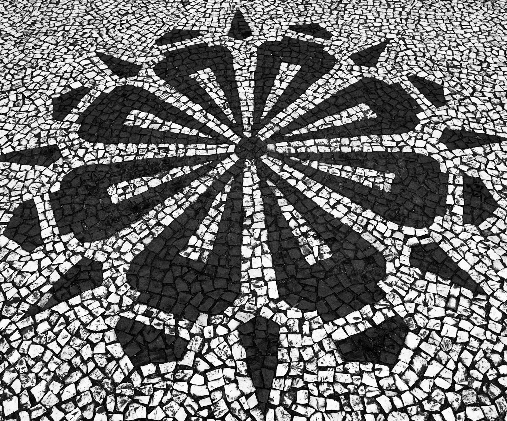
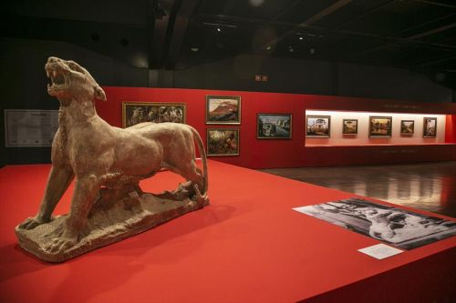
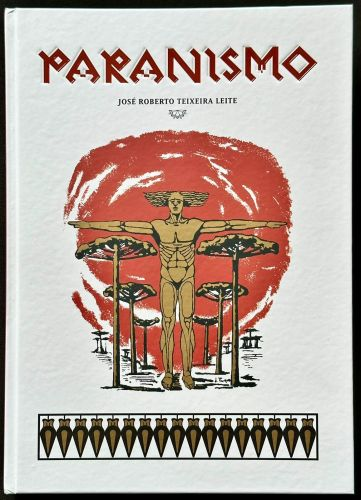

Sobre o tema
O Movimento Paranista foi uma corrente artística, cultural e intelectual nascida no Paraná com o objetivo de criar uma identidade visual e cultural própria para o estado. Em vez de apenas reproduzir padrões vindos da Europa ou do eixo Rio-São Paulo, os artistas paranistas buscaram na natureza local (como a araucária e o pinhão), na história e nas figuras da terra as referências para definir o que era a "alma paranaense".

Contexto histórico
O Paranismo ganhou força principalmente entre as décadas de 1920 e 1930. Décadas após a emancipação política do Paraná (em 1853), a elite intelectual e os artistas sentiam que o estado ainda carecia de um sentimento de pertencimento e de uma estética marcante perante o restante do Brasil. Influenciados pelo clima regionalista da época e pela busca por modernização, intelectuais, pintores e escultores se uniram para consolidar os símbolos e a força estética da região.

Importância cultural
O Movimento Paranista moldou quase tudo o que hoje associamos visualmente ao Paraná. Os principais destaques do movimento foram:
Simbolismo da Natureza: Elementos como a Araucária (pinheiro-do-paraná), o pinhão, a erva-mate e a gralha-azul viraram ícones da arte e do design local. As calçadas em petit-pavé de Curitiba (como as da Rua XV de Novembro) são derivadas diretas desse movimento!
Representação Humana: Valorização do indígena (especialmente os Kaingang), do tropeiro e dos imigrantes europeus como pilares da formação do estado.
Grandes Nomes das Artes Visuais:
- João Turin: O maior nome da escultura paranaense, famoso por retratar a fauna (como pumas) e figuras históricas.
- Lange de Morretes: Pintor e designer que criou padrões geométricos paranistas aplicados em arquitetura, móveis e cerâmica.
- Guido Viaro e João Ghelfi: Pintores fundamentais no registro da paisagem e do cotidiano local.
- Alfredo Andersen: Pintor dinamarquês radicado em Curitiba, considerado o "pai da pintura paranaense" por ter formado a geração de artistas desse movimento.

Curiosidades
Curiosidade 1
Design e geometria do pinhão: Uma das maiores marcas do movimento foi a estilização da natureza local. Artistas como Lange de Morretes transformaram elementos como o pinheiro-do-paraná (Araucária), a pinha, o pinhão e a erva-mate em padrões geométricos para calçadas, vitrais, móveis e arquitetura.
Curiosidade 2
O símbolo das calçadas de Curitiba: As famosas calçadas de pedra portuguesa em forma de rosáceas e pinhões que cobrem o centro de Curitiba (como no Calçadão da Rua das Flores) foram criadas sob a influência direta do Paranismo.